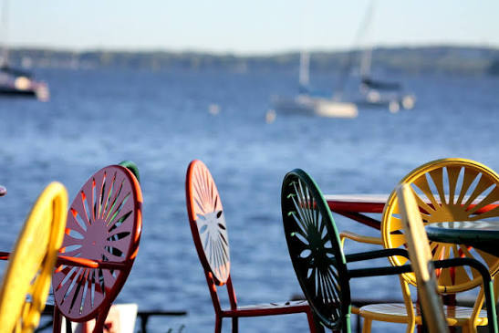

Lakefront Living
Enjoy scenic sunsets, sailing, and gathering with friends at the famous Memorial Union Terrace.
Discover iconic campus views, deep-rooted traditions, and life on Lake Mendota.
Get StartedEnjoy scenic sunsets, sailing, and gathering with friends at the famous Memorial Union Terrace.
Explore historic landmarks like Bascom Hall, the Carillon Tower, and Capitol views.
Feel the badger spirit at Camp Randall Stadium and state-of-the-art recreation centers.
Located right in the heart of downtown Madison, UW-Madison bridges natural beauty and urban energy. From studying on Bascom Hill to paddling across Lake Mendota, campus life offers an unforgettable mix of academic excellence and awesome traditions.

Tour opportunities run year-round, starting from the Welcome Center near Union South. Book a guided walk or explore at your own pace.
Learn MoreDon't miss out on enjoying authentic Babcock Dairy ice cream or joining the legendary "Jump Around" tradition during football games!
Read StoryPlan your visit to Madison today and experience campus life firsthand.
Visit UW-Madison